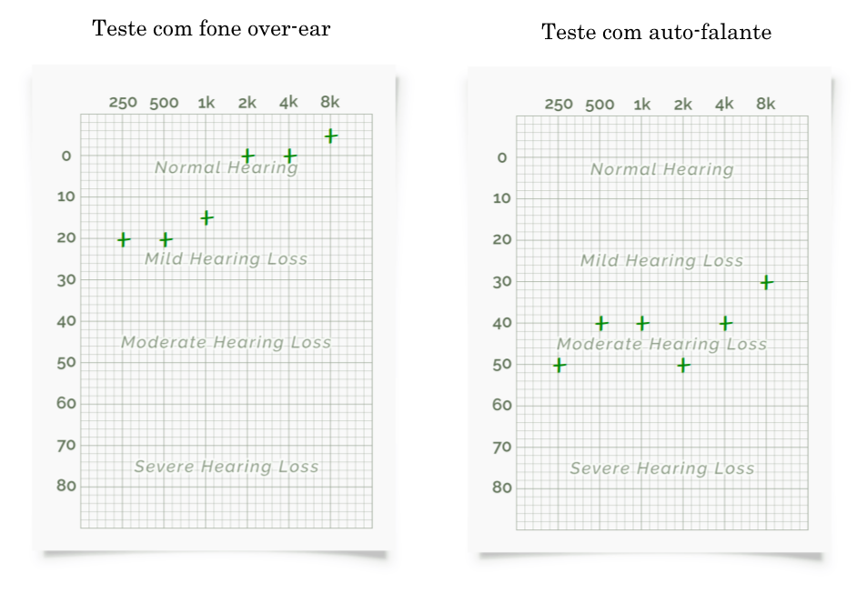

Lab 5 - Percepção Auditiva
2. Teste de Audiometria.
Resultados dos testes de Audiograma
Teste audiograma Matheus

Teste audiograma Sheila
Discussão dos testes de audiograma
É notável como a audição dos membros são bem diferentes, enquanto a Sheila conseguiu ouvir sons com uma capacacidade auditiva muito boa, o Matheus teve algumas dificuldades na identificação dos sons em frequências menores, demonstrando uma leve perda de capacidade auditiva.
Nos testes sem fone over-ear o teste se mostrou muito mais dificil, isso se deve muito a própria capacidade de reproduzação de som do auto-falante, além do fato de haver muitos ruídos externos, mesmo que o ambiente pareça razoavelmente silencioso.
3. Teste de Faixa Audível
Conclusões sobre os aspectos psicoacústicos
As diferenças ocorrem pois cada aparelho, seja o auto-falante do computador, o fone de ouvido ou o celular, apresentam uma capacidade diferente de reproduzação sonora, tanto o limite superior quanto inferior pode se alterar.
Outra questão é que cada reprodutor pode reproduzir o som de maneiras diferentes, o auto-falante do computador pode reproduzir o som de maneira mais ampla no espaço, sem nenhum direcionamento, além disso há muito ruído no ambiente, já o celular consegue direcionar melhor o som por conter apenas um ou dois alto-falantes em locais bem direcionados, já o fone-de-ouvido consegue reproduzir o som com muito mais fidelidade, direcionar direto para os ouvidos e sofre menos influência de ruídos externos.
O último ponto de influência são os materiais que cada aparelho possui, pois o som pode se dissipar nesses materiais, além da questão da ressonância que eles podem sofrer.
Como conclusão final, o uso do fone-de-ouvido reproduz com maior capacidade altas e baixas frequências e sofre menos por ruídos externos
4. Teste de Mascaramento de Tons Harmônicos
Testes realizados com diferentes faixas de frequências
Faixa de frequência f1=600Hz e f2=1kHz
Faixa de frequência f1=1.2kHz e f2=2kHz
Faixa de frequência f1=2.4kHz e f2=4kHz
5. Outros testes
Teste de não-linearidade auditiva
Discussão sobre o teste
São realizados 3 testes, sendo eles:
Audição não-linear
Neste teste são realizadas variações nas frequências, uma em escala linear e outra em escala logarítmica, e fica claro que as diferenças nas mudanças logarítmicas são muito mais claras do que na escala linear.
Além disso, na escala logarítmica as alterações de frequência mantém uma constância mais flúida que nas alterações lineares.
Sensibilidade a frequência
Nós, seres-humanos, temos um pico de percepção de cerca de 3kHz, onde por mais que ouçamos algo com a mesma intensidade em dB, o som próximo de 3kHz pode parecer mais alto
O teste consistiu em rodar um som na frequência de 300 Hz e um na frequência de 3kHz, ambos na mesma intensidade, porém o som na frequência de 3kHz parecia mais alto
Sensibilidade a frequência e sua relação com a intensidade
Temos uma alteção na nossa percepção de diferentes frequências dependendo da intensidade, conforme aumentamos a intensidade o som começa se tornar mais planar, portanto conseguimos ouvir melhor sons com frequências menores, por exemplo.
Audição não-linear humana
Link do material
https://physicsworld.com/a/human-hearing-is-highly-nonlinear/
Artigo publicado referenciado no site acima
Resumo
No experimento realizado testaram vários participantes variando os sons tocados, os participantes tinham que dizer qual som achavam que era mais alto.
O resultado do experimento foi de que a audição humana é altamente não linear, o que pode ser testado de maneira simplificada no teste mencionado neste relatório